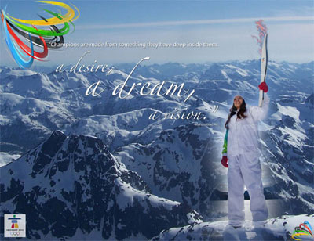
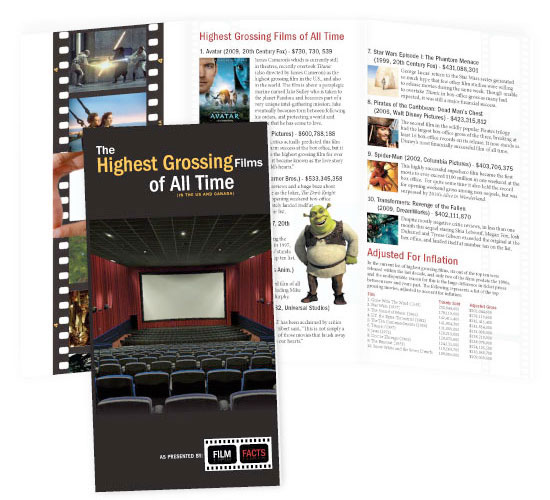
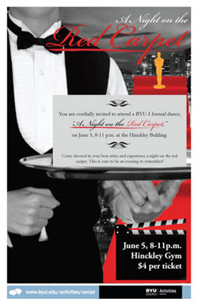

Print Design
Image Montage
The montages below were created by blending together multiple images and adding typography in Photoshop. Both were made during my COMM 130 Intro to Visual Media class.

Brochure Design
The brochure below was created in my COMM 130 class. The assignment was to choose any topic and create an informational brochure. It includes a logo design for a fictional company called "Film Facts", and was created in Adobe InDesign.
Poster Design
A few years ago I volunteered as a Promotions Manager on BYU-Idaho campus, and was responsible to design posters for various events. Below are a few of the posters designed using the Adobe Suite.
